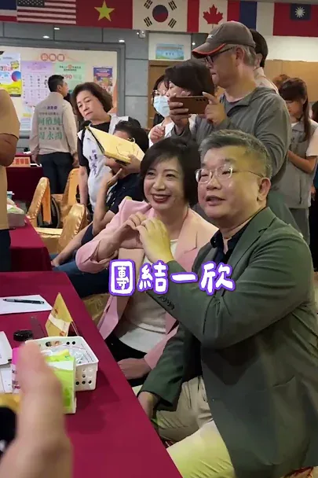
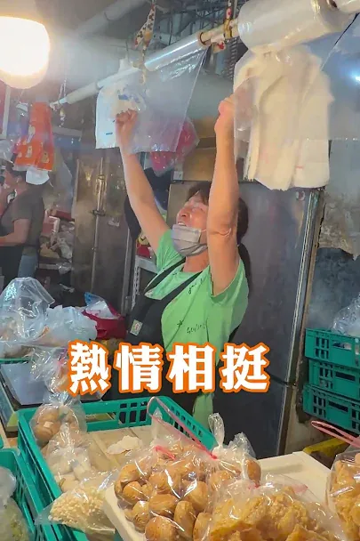

賴瑞隆zenolai

@zenolai:趁著行程空檔來碗肉燥飯，也外帶幾份給助理們。 一碗肉燥飯，有人喜歡滷汁多一點、有人喜歡清爽一點，每個人口味不同；一座城市也是一樣，有不同的想法、不同的選擇。 高雄之所以偉大，就在於城市有多元的聲音，也有包容不同選擇的胸襟。我也會繼續努力，爭取更多市民的認同。 每一位認真打拚、用心經營的在地店家都相當不簡單，我們一起支持高雄好味道，也祝福大家生意興隆！
Posts
@zenolai:趁著行程空檔來碗肉燥飯，也外帶幾份給助理們。 一碗肉燥飯，有人喜歡滷汁多一點、有人喜歡清爽一點，每個人口味不同；一座城市也是一樣，有不同的想法、不同的選擇。 高雄之所以偉大，就在於城市有多元的聲音，也有包容不同選擇的胸襟。我也會繼續努力，爭取更多市民的認同。 每一位認真打拚、用心經營的在地店家都相當不簡單，我們一起支持高雄好味道，也祝福大家生意興隆！

跑到現在，才開始吃今天的第一餐😅 趕快補充能量，迎接晚上的中秋晚會馬拉松！


Didn't see a part two coming, did you? Back for another chemistry test—can we match our answers t...


何欣純在英國求學的時候，想念台灣家鄉味，就會跟英國室友分享我的炒米粉，省錢有有人情味！ 美鳳姐超漂亮的！❤
@zenolai:我只不過唱個「離開地球表面」，怎麼下一秒就離開地面了？

【水獺媽媽巧巧話】讓我安靜五分鐘｜親子關係｜家庭生活｜兒童繪本

一次活動現場， 有人拿了一張很舊的小桌子過來， 說:「妃妃姐姐 · 我要請你在這裡再簽一次。」 我看那張桌子， 上面已經有一個模糊的簽名。 字跡是20幾年前的我所寫的。 那瞬間，我哽咽了， 在現場停了3秒。 因為他告訴我: 「這張桌子是家裡長輩留下來的， 她走之前有交代，上面的字不可以擦掉。」 我拿起筆， 在原本的字旁邊，又寫了一遍。 有些字，你以為只是簽名， 其實是一場永遠支持的約定。


水獺媽媽樂園大變身！這次我們把數學變好玩！#水獺媽媽數感樂園 在新店開園啦！ 這次，我和 #數感實驗室 合作，準備了滿滿的數學闖關遊戲，要讓大朋友、小朋友不僅在假日時，盡情玩樂享受寶貴的親子時光，更能從中找回探索知識的樂趣！ 🗓️9月20日（日）上午9:00至12:00 📍新店耕莘專校 學生活動中心 （新店區民族路112號） 🎟️免費入場


賣了幾十年菜的老闆，把手上的生意先放一邊，拿起手機對著我們拍。 說實在，那一刻我有點不好意思。人家在做生意，我們來打擾。 昨天一早，蔣萬安市長從台北過來，陪我走板橋福德市場。一攤一攤過去，握手、合照，老闆娘手機舉起來等，我就湊過去給她拍一張。 有位鄉親端出兩根綁著紅緞帶的白蘿蔔，說：好彩頭，送給你們，凍蒜。 市場裡沒有樣本數，也沒有信心水準。每一隻伸過來的手，都是真的。 台北挺新北，不會只有到了選舉才開始。三年多來難的事我們一起扛過，接下來雙北要接的線、要通的橋，也一樣。 他們今天把生意先放一邊，我們就得把明天的日子顧好一點。

從中元前夕，我就參加各式各樣的普渡。今天我到桃園觀光夜市、中壢批發市場、中壢青果市場，和鄉親朋友們一起拜拜普渡，祈求平安。 我也趁著行程和市民朋友聊聊，了解大家關心的、想要改變的事。 這是我一直以來堅持多走多聽的原因，只有去瞭解地方真正的需要，未來市政的推動才能貼近市民需求！讓我們一起翻轉桃園，桃園大步向前💖

【Otter Mom's Little Chats】Calling My Cat | Pet Companionship | Anticipation and Discovery | Child...

一座停車場，也能看見 #臺中的味道！👍 今天出席 #中賓立體停車場 啟用典禮，感謝蔡長海董事長帶領中國醫團隊，與市府攜手提供401席汽車、375席機車停車位。捷安特家族更將對醫療團隊的感謝化為公益，捐贈22柱 #YouBike 租賃柱，讓大家停好車、騎單車，悠遊臺中！ 我常說，盧秀燕市長「大處著眼、小處著手」。配合崇德殯儀館改建，先做好停車配套，就是把市民需求放在心上。從安心出生、健康生活，到有尊嚴地走完人生最後一哩路，城市都要用心照顧。啟臣會延續這份用心，讓臺中成長、生活品質一起提升！ #臺中啟程 #打造旗艦城 #臺中升級 #臺中市北區 #公私協力 #中國醫藥大學附設醫院 #微笑單車 #智慧停車 #友善交通


迎接全民運在桃園，我們希望運動不只在賽場，也走進市民的日常生活 桃園是全台人口成長最快的城市之一，除了交通、建設要跟上，市民需要的運動空間，也要一步一步補足。 今天，龍岡全民運動館正式落成啟用，大園體育園區也同步開工。這兩項建設，一南一北，我們持續完善桃園各區的運動、休閒設施。 #龍岡全民運動館試營運 投入近4.8億元打造的龍岡全民運動館，規劃溫水游泳池、SPA、體適能中心與多功能教室，並導入AI智慧安全防護，補足龍岡地區長期缺乏大型室內運動及游泳空間的需求。 即日起至9月20日免費試營運，歡迎大家來體驗。 #大園體育園區開工 大園則是另一種情況。隨著航空城開發、客運園區移入，大園的人口持續成長，我們投入7.7億元打造大園體育園區。 除了25公尺溫水泳池、綜合球場及健身空間，也依照地形配置綠地步道與生態景觀，讓園區能一次滿足不同興趣愛好的朋友，工程預計118年完工。 一個是補足現在的生活需求；一個是替未來的成長預先準備。 這幾年，從爭取預算、克服用地限制，到把一項項工程做好，過程並不容易，但我們會繼續把每一分建設經費用在刀口上，讓各區都能有更充足的運動空間。 10月，#全民運 即將在桃園登場，除了辦好賽事，我們更希望透過運動建設，讓運動不只發生在賽場，也讓更多市民愛上運動，變得更健康、更快樂。

何欣純在英國求學的時候，想念台灣家鄉味，就會跟英國室友分享我的炒米粉，省錢有有人情味！美鳳姐超漂亮的！❤

東山區全民運動體健場 正式啟用！🎈 看到現場的小朋友們拿著繽紛的氣球花、在全新的設施上歡樂奔跑，臉上洋溢著天真無邪的笑容，心情也跟著亮了起來！😊✨ 感謝所有為這座體健場努力的夥伴與鄉親，為東山打造了一個兼具運動、休閒與親子同樂的好去處。目前一期工程完工，還有二期工程，亭妃會幫大家完成！未來亭妃也會讓37區都有屬於自己的運動空間，讓大朋友小朋友都有更優質、更安全的生活與運動環境！


150塊，在台北可以買到什麼？ ⠀ 可以買一本內容豐富的《大誌雜誌》， 支持弱勢及無家者靠自己的力量，重新站穩生活。 ⠀ 下次在捷運站出口，不妨停下腳步， 帶一本《大誌》回家。 ⠀ 一本雜誌，也能接住一個努力生活的人。

Netizen Appeal: After the factory fire on Baodong 2nd Street, metal sheets were left teetering… W...


台上用心演一齣好戲，感動觀眾；城市用心拚每一天，幸福市民。

從台中市長侯選人，成為台中市長，需要台中市民每一分的力量、每一票的支持！ 歡迎留言告訴何欣純，台中市碰到的問題，何欣純來認真找解方！

@hammer__lee:在雨中，鄉親送我的見面禮，是那一聲「川伯加油」 今天傍晚，我到三峽黃昏市場，向冒雨前來採買的鄉親問好。老話一句，雨再大，他們熱情如火，我真有點捨不得走。 在雨中忙碌，還是有許多鄉親，願意停下手邊的事，握住我的手。 有一位年輕人，把車靠邊停下，跑過來要和我合照，他說「我是你的粉絲」，說實在，我真有點歹勢，但也充滿感恩。 還有餐廳老闆，帶著員工出來為我加油，為我鼓勵，我絕對會繼續努力。 市場承載著在地人記憶，寫著三峽人的日常，撐起三峽人的生活。 新北雨不停，三峽人的熱情，讓我心中放晴。

@schuanglawyer:跑到現在，才有空坐下吃今天的第一餐😅 趕快補充能量，準備迎接晚上的中秋晚會馬拉松！

龍介來囉！和你談天說地論台灣｜龍介的直播

欸？挺會找的欸～ #躲貓貓 #變色龍 #水獺媽媽樂園#mecchachameleon
【小女孩好想要有一隻貓來抱一抱，像個鬆鬆軟軟大毛球一樣的貓。他能如願嗎？】 適讀年齡：4歲以上 ✏️ 本集台語小教室紙箱、球、飼料、罐頭 《呼喚我的貓》文：蜜雪兒．羅賓森 圖：李瑾倫 小女孩好想要有一隻貓來抱一抱，像個鬆鬆軟軟大毛球一樣的貓。小女孩準備了橡皮球、貓薄荷、紙箱子…… 終於，奶奶家養的黑皮帶了許多朋友來。一整天都有這麼多貓咪陪伴，還有一隻窩在襪子的抽屜裡，真是太棒了！只不過，這些都是別人家的貓，心急的主人們還在街邊牆上貼了尋貓啟事，該怎麼辦呢？ 故事由上誼文化授權使用 👇 繪本這裡看：https://www.books.com.tw/products/0010810177? 👇 更多親子大小事，請在 FB 搜尋： 水獺媽媽巧慧與他的好朋友https://www.facebook.com/ottermamachiao 👇 寫信給水獺媽媽：100925 立法院郵局 第 27 號信箱 水獺媽媽收

Unboxing New Taipei Vol. 1: Right Next Door

今天我和 #蕭美琴 副總統在金山挖芋頭，也和在地青年、農會聊聊對金山未來的想像！ 我們都是芋頭派的喔🤩（芋頭派的舉手～🙋🏼


江江為你熬湯ep02 霧峰麻薏湯

哈囉你好嗎！在哈囉市場一路哈囉到底，大家真的有夠暖、讚啦👍

從中元前夕，我就參加各式各樣的普渡。今天我到桃園觀光夜市、中壢批發市場、中壢青果市場，和鄉親朋友們一起拜拜普渡，祈求平安。 我也趁著行程和市民朋友聊聊，了解大家關心的、想要改變的事。 這是我一直以來堅持多走多聽的原因，只有去瞭解地方真正的需要，未來市政的推動才能貼近市民需求！讓我們一起翻轉桃園，桃園大步向前💖

在雨中，鄉親送我的見面禮，是那一聲「川伯加油」 今天傍晚，我到三峽黃昏市場，向冒雨前來採買的鄉親問好。老話一句，雨再大，他們熱情如火，我真有點捨不得走。 在雨中忙碌，還是有許多鄉親，願意停下手邊的事，握住我的手。 有一位年輕人，把車靠邊停下，跑過來要和我合照，他說「我是你的粉絲」，說實在，我真有點歹勢，但也充滿感恩。 還有餐廳老闆，帶著員工出來為我加油，為我鼓勵，我絕對會繼續努力。 市場承載著在地人記憶，寫著三峽人的日常，撐起三峽人的生活。 新北雨不停，三峽人的熱情，讓我心中放晴。